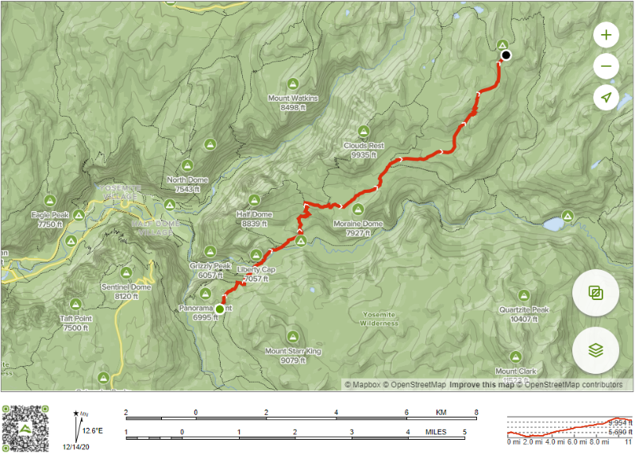

Day 2 - Illilouette to Sunrise
12.5mi, 800' down, 3500' up, camp at 9300'
|  |
Corey is the first one up for a bathroom break, then crawls back in to read his book ("The Shining") while waiting for us to get up. Pete is still sleeping. We'd previously agreed that we would get up at 6am (long day of hiking) so at 6:15, I go to wake up Pete, but he won't respond to my words. I figure a stronger intervention is required so I go get Corey to wake up his dad (it turns out he has ear plugs in because of all the animal noises which is why he doesn't hear me trying to wake him up). Yummy breakfast and we hit the trail by 8:00. I had several slight headaches that first day as I was getting used to the altitude and exerting at altitude. I took a couple Advil each time and they went away quickly (this is common for me until I get used to the altitude).
Pete sleeping under the stars
 |
Corey reading his book
 |

First trail breakfast
 |
The plan for the day is to hike out of the Illilouette drainage area, back to the Panorama Trail, down to the top of Nevada Falls where we join the JMT, up to Little Yosemite Valley, past the Half Dome Trail Junction and up to somewhere just short of the Sunrise High Sierra Camp. We don't really know what to expect in terms of water availability once we're past Little Yosemite. All we know for sure is that there should be a reliable water source just past the Half Dome Trail junction, but we don't know if there's any water again until the Sunrise High Sierra camp. We hope to get water info from hikers going the other way so we know whether we need to carry 1/2 liter or 3 liters. Assuming the weather today is like yesterday, it's going to be hot, dry and dusty as the day heats up.
Heading back to the Panorama Trail in a previously burned area
 |
The hike back to the Panorama Trail doesn't take long and then we descend down to Vernal Falls where we take a break to wash some clothes and ourselves since we had a dry camp the night before. After filling up my hydration bladder, I notice that it's leaking. I examine what's going on and find out that the bladder has been pinched (probably in the lid of my bear container) and is leaking slowly out the side of the bladder. OK, I've got some repair materials - let's see what might work here. I get out some Tenacious Tape and carefully cut a piece the right size, dry off the affected area (requires emptying my hydration bladder) and apply the tape. It seems to be a solid repair so I fill up the hydration bladder and no more leaking (it turns out this repair lasts the whole trip). From now on, I'm much more careful with the hydration bladder. So ... great in the first 12 hours of the trip, I've got leaks in my sleeping pad and my hydration bladder. The sleeping pad I can kind of understand as there were a lot of little sticks in the ground and one of them must have poked up through my groundcloth and punctured the pad. The hydration bladder must have just been a mistake pinching it in the bear container lid. I can be more careful with the hydration bladder so that won't happen again - but I'm not so confident about the sleeping pad which hasn't been fixed yet and seems mighty vulnerable. I hope this super lightweight (but vulnerable to puncture) air mattress isn't a mistake. I don't want to be sleeping straight on the ground for the next two weeks.
Water rushing over Nevada Falls
 |
Calm water above Nevada Falls where we clean up and fill up
 |
Now on the JMT, headed for Tuolumne Meadows
 |
Out of Little Yosemite, the trail starts to get steeper and we start to get a taste of our first long climb. Hikers going the other way confirm that there's water past the Half Dome Trail junction so we plan for that as our next water stop.
After we pass the Half Dome Trail junction, the trail goes from crowded (tons of people going to Half Dome) to barely anyone on it. We get to the water (small creek coming down a steep hill) and take a nice break to rest and eat. While stopped here, we get info from other hikers coming down that there is a creek still flowing pretty much the whole way down a long group of switchbacks that we'll hit later in the day and there is water for backpackers at Sunrise too. This is very good news so we don't have to carry as much water or have a dry camp. We start thinking that maybe we'll go all the way to Sunrise and camp in the backpacker's area there so we don't have to dry camp and can carry less water, but we'll adapt the plan based on how we do. It's definitely getting hot.
On the way to the switchbacks, we start to get our first views of the high country as there's a big valley off to the east and jagged peaks on the other side and I fall behind the others as I stop to take pictures of our first views of the high country (a common occurrence). At the base of the major switchbacks that we've been waiting for is a major stream and we rest and fill up. As we start up the switchbacks, we decide we're going all the way to Sunrise. The switchbacks are difficult. It's been a long, hot day so far and this is definitely the steepest and highest we've seen yet. We try talking to pass the time, but soon we're too tired to keep talking and the focus just goes into the hiking routine.

Spectacular views of Mount Clark as we hike along a ridge
 |
The trail is pretty relentlessly up this day
 |
They’re probably waiting for me (the guy who’s always stopping to take pictures)
 |

Lots of different views this day
 |
I develop a hot spot on my right small toe and ask the group to stop so I can attend to it. I bandage it and put some baby powder on the bandage and that seems to work for today. The idea with the baby powder is that it makes it so the bandage slides easily within the shoe so as long as the slippage happens between shoe and bandage not between layers of skin, you don't get a blister. Half way up the switchbacks, we take a long break to catch our breath. We're probably hiking too fast and then getting worn out too quickly and being forced into regularly stopping, but even though we kind of know that we're not really changing our behavior. We start talking about taking a break every 10 minutes or so on the steep sections. I'm really feeling the altitude, quite winded and it's hot. I have no idea what the temperature is, but it's that type of heat that just kind of saps the energy out of you and makes you feel uncomfortable.
We finally make it to the top of the switchbacks (yeah!). It should be about two more miles to Sunrise and a gentle downhill. Just a quarter mile short of Sunrise, we come across a small creek and a neat campsite with a gorgeous view. It's hard to imagine a better campsite so it's an easy decision to set up camp here away from the other people at Sunrise. We're sitting in our "kitchen" area eating dinner with gorgeous views of the high country.
We were all famished for dinner, food never tasted so good. I called Steph briefly on the satellite phone just to say hi and see how it worked and that was fun. She's still in Virginia with Sara at a soccer tournament and they are doing well in their tournament so far. Steph would love the views here.


Our "kitchen" with spectacular views
 |

Sunset with the Yosemite high country in the background
 |

Pete and Corey's "room with a view"
 |
We crash at 8:30 exhausted. I know I haven't yet fixed my sleeping pad so it's probably going to go flat several times tonight (it does).